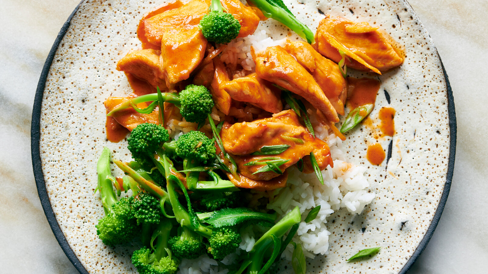

Coconut-Gochujang Glazed Chicken with Broccoli

Spicy Korean gochujang mellowed into a creamy coconut sauce with ginger, glazing tender chicken and broccoli.
2 tbspcanola oil1½ lbs / 680gboneless, skinless chicken breasts, cut into 1½-inch pieces- kosher salt and black pepper
1(2-inch) piece fresh ginger, peeled and cut into matchsticks (about ⅓ cup)½ cupunsweetened coconut milk3 tbspturbinado sugar or2 tbsplight brown sugar2 tbspgochujang paste2 tbsplow-sodium soy sauce1 lb / 450gbroccoli florets, cut into 2-inch pieces- cooked rice, for serving
- sliced scallions or chopped fresh cilantro, for garnish
In a large nonstick skillet, heat oil over medium-high. Season chicken with salt and pepper and cook, stirring occasionally, until golden all over, about 3 minutes. Add ginger and cook, stirring occasionally, until softened, about 2 minutes.
Add coconut milk, sugar, gochujang and soy sauce and bring to a simmer, stirring until gochujang dissolves. Gently simmer over medium-low heat, stirring, until chicken is cooked through, about 5 minutes.
Meanwhile, in a saucepan of salted boiling water, blanch broccoli until crisp-tender, 2 minutes. Drain.
Divide chicken and broccoli among plates; spoon with sauce. Garnish with scallions or cilantro and serve with rice.